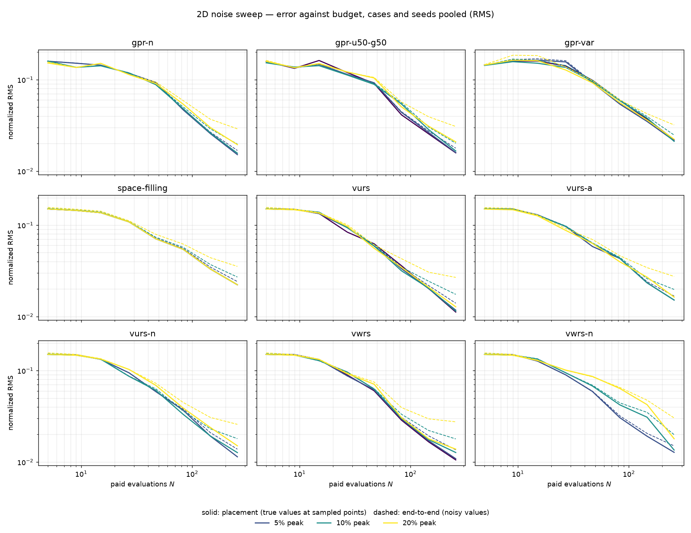
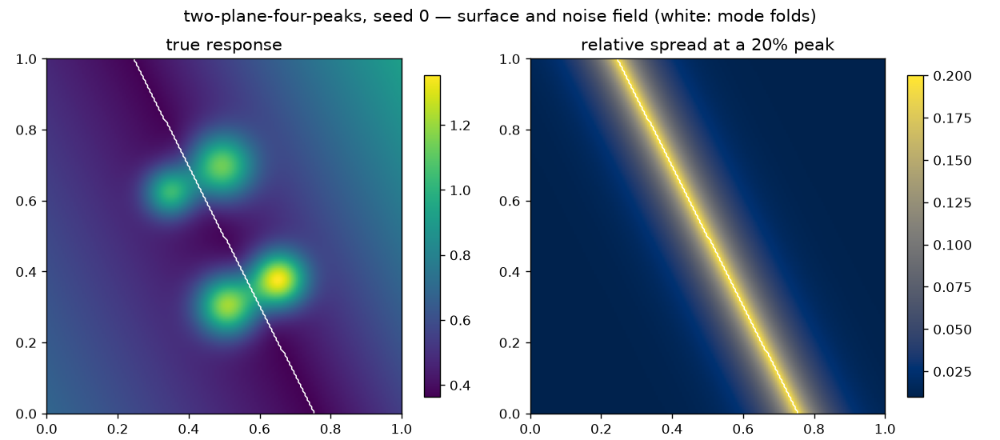
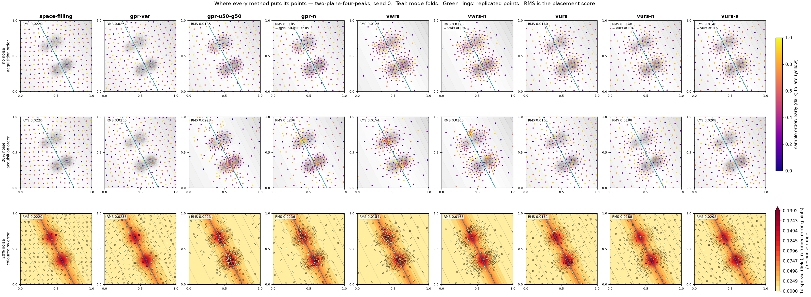
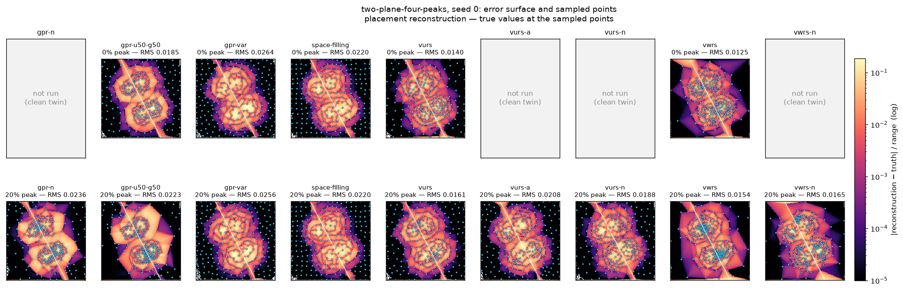
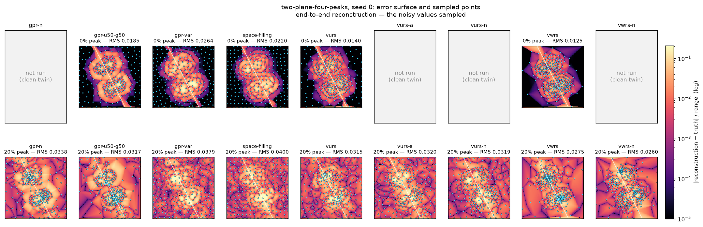
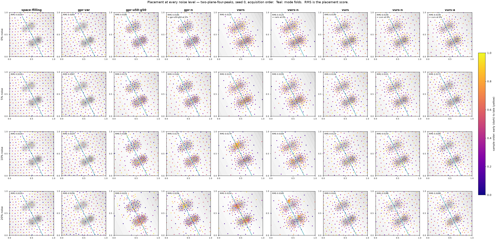
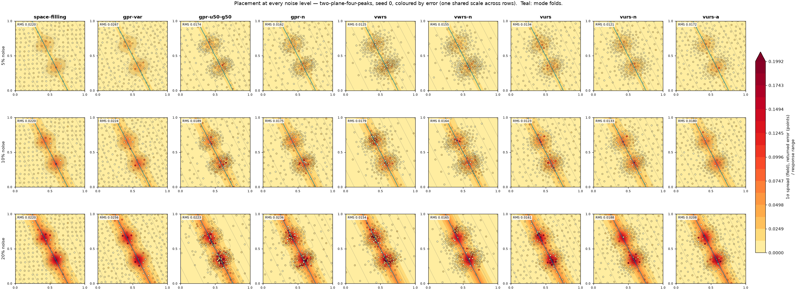

Partial run: 288 completed trajectories. Commit 02e17464b1.
The sampler sees values carrying a relative spread that rises from a 1% floor to the stated peak at the mode folds. Placement reconstructs from the true response at the sampled points, isolating where the sampler looked. End-to-end (grey) reconstructs from the noisy values it actually saw. Both are graded on the noiseless surface with the common Delaunay evaluator. Values are pooled RMS over cases and seeds at the final budget.
| arm | 0% peak | 5% peak | 10% peak | 20% peak | ||||
|---|---|---|---|---|---|---|---|---|
| placement | end-to-end | placement | end-to-end | placement | end-to-end | placement | end-to-end | |
| gpr-n | — | — | 0.0151 | 0.0168 | 0.0157 | 0.0197 | 0.0194 | 0.0290 |
| gpr-u50-g50 | 0.0158 | 0.0158 | 0.0159 | 0.0178 | 0.0166 | 0.0202 | 0.0208 | 0.0307 |
| gpr-var | 0.0221 | 0.0221 | 0.0214 | 0.0219 | 0.0211 | 0.0248 | 0.0223 | 0.0320 |
| space-filling | 0.0222 | 0.0222 | 0.0222 | 0.0241 | 0.0222 | 0.0270 | 0.0222 | 0.0354 |
| vurs | 0.0112 | 0.0112 | 0.0117 | 0.0140 | 0.0115 | 0.0175 | 0.0128 | 0.0268 |
| vurs-a | — | — | 0.0151 | 0.0167 | 0.0152 | 0.0198 | 0.0163 | 0.0275 |
| vurs-n | — | — | 0.0114 | 0.0138 | 0.0127 | 0.0180 | 0.0150 | 0.0258 |
| vwrs | 0.0105 | 0.0105 | 0.0109 | 0.0136 | 0.0127 | 0.0179 | 0.0138 | 0.0275 |
| vwrs-n | — | — | 0.0127 | 0.0150 | 0.0135 | 0.0199 | 0.0180 | 0.0303 |






